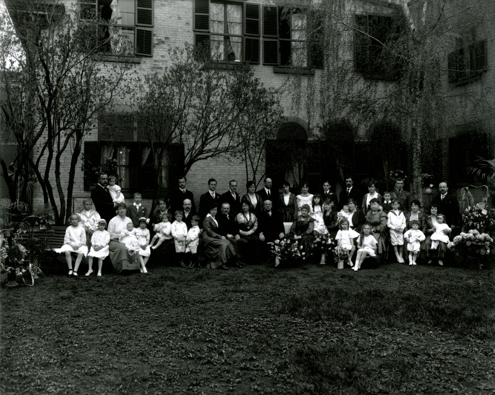

D'un soldat huguenot à une dynastie de juristes
Originaire des collines du Languedoc, la famille Lacoste s'enracine à Boucherville à la fin du XVIIe siècle. En quatre générations, elle passe du défrichement de la terre à l'étude notariale, puis à la magistrature et au Sénat, avant de tisser, par ses treize enfants, un vaste réseau d'alliances avec la grande bourgeoisie catholique francophone du Québec — Duchastel de Montrouge, Gérin‑Lajoie, Beaubien, Frémont — et de compter parmi ses membres la fondatrice de l'Hôpital Sainte‑Justine et l'une des pionnières du féminisme québécois.
Les origines languedociennes
Né vers 1665, Alexandre Lacoste dit Languedoc est le fils d'Olivier Lacoste et de Jeanne Bastide. La famille est originaire de Saint‑Julien‑de‑la‑Nef, près de Nîmes, sur les collines occidentales de l'Hérault. Le patronyme Lacoste, décliné aussi en Coste, La Coste ou Costa, signifie « la côte » en langue d'oc.
De confession protestante, les Lacoste vivent dans un climat de tensions religieuses marqué par les persécutions huguenotes, auxquelles s'ajoutent des périodes de sécheresse qui fragilisent l'économie du sud de la France. Alexandre quitte la région peu avant la grande répression qui frappera les protestants ; le tirage au sort militaire envoie alors nombre de jeunes hommes vers la Marine, mais on peut aussi y voir le choix d'un jeune homme d'une vingtaine d'années attiré par l'aventure du Nouveau Monde.
1685 : la traversée et l'arrivée en Nouvelle-France
Alexandre s'engage dans le régiment commandé par Pierre de Troyes et embarque à La Rochelle en juin 1685, à bord du Fourgon ou du Mulet. La traversée est éprouvante : maladies et conditions de vie précaires emportent près du tiers de l'équipage. Alexandre survit et atteint Québec sain et sauf, devenant ainsi le premier membre de la famille Lacoste établi en Nouvelle‑France.
Au service de Pierre de Troyes puis du sieur de Vaudreuil, le jeune soldat‑paysan s'installe d'abord à Longueuil, chez le juge Jean Robin, où il découvre la vie de colon et la rigueur de l'hiver canadien, dans un territoire exposé aux attaques iroquoises et aux tensions avec les Anglais.
Alexandre Lacoste à Boucherville, fondateur de la lignée
Avant même sa démobilisation, Alexandre rencontre Jeanne Robin, fille du juge Jean Robin et de Jeanne Chardon de Longueuil, qu'il épouse à Boucherville en 1688. Jeanne meurt le 10 mars 1690, peu après la naissance de leur fille Marie‑Thérèse, elle‑même emportée trop tôt. Le 24 avril 1690, Alexandre épouse en secondes noces Marguerite Deniau ; de cette union naissent neuf enfants.
En 1691, Alexandre s'établit à Boucherville en louant la ferme de Pierre‑Noël Le Gardeur. Quelques années plus tard, le sieur Le Moyne de Longueuil lui concède quatre‑vingts arpents au village du Tremblay, mais le destin le ramène à Boucherville, où il poursuit son œuvre de colon et de père jusqu'à sa mort en 1737. Parmi ses dix enfants, c'est la branche issue de son fils Louis (1699–1791) qui se distingue et mène, en ligne directe, jusqu'à Louis Lacoste G4 puis à Sir Alexandre Lacoste.
Quatre générations de fermiers, puis un notaire
De Louis Lacoste (1699–1791), marié en 1720 à Marie‑Anne Babin Lacroix, à son petit‑fils Louis Lacoste (1763–1812), marié en 1787 à Marie‑Josèphe Dubois dit Quintin, la famille reste fermière à Boucherville. C'est le fils de ce dernier couple, également prénommé Louis, qui change le destin familial en devenant notaire — la charnière entre la terre et la vie publique.
L'honorable Louis Lacoste (1798–1878), notaire et patriote
Né à Boucherville le 3 avril 1798, sixième enfant de Louis Lacoste et de Josèphe Dubois, Louis manifeste dès l'enfance une intelligence précoce. Remarqué par les religieux, il étudie au Séminaire de Montréal de 1810 à 1815 avant de se tourner vers le notariat ; à 23 ans, il ouvre sa propre étude à Boucherville, où il se forge une réputation de notaire proche du peuple et attentif aux situations difficiles.
Trois unions marquent sa vie : Catherine‑Renée Boucher de la Bruère en 1823 (six enfants, dont deux morts en bas âge ; elle meurt du choléra en 1832), Charlotte Mount en 1835 (union de courte durée, sans descendance), puis Marie‑Antoinette Thaïs Proulx en 1838, dont naissent six enfants, dont trois seulement atteignent l'âge adulte — parmi eux, Alexandre G5, qui assure la continuité de la lignée.
Fervent partisan de Louis‑Joseph Papineau, Louis Lacoste appuie le Parti patriote et rejoint les Fils de la Liberté. Lors de l'Assemblée des Six‑Comtés à Saint‑Charles‑sur‑Richelieu en octobre 1837, il prononce un discours critiquant l'administration britannique, ce qui lui vaut un mandat d'arrêt pour haute trahison. Il se livre volontairement le 8 décembre 1837 et demeure emprisonné au Pied‑du‑Courant jusqu'au 7 juillet 1838, avant d'être libéré sans procès contre une caution.
Élu député du comté de Chambly en 1834, réélu jusqu'en 1861, il devient le 20 janvier 1857 le premier maire de Boucherville, fonction qu'il exerce plus de dix ans, avant de siéger comme conseiller législatif puis sénateur à partir de la Confédération de 1867. Tout au long de sa carrière notariale, de 1821 à 1871, il rédige plus de 8 500 actes. Il meurt à Boucherville en 1878 ; une rue de Boucherville et une avenue de Montréal portent aujourd'hui son nom, de même que le prix Louis‑Lacoste, décerné chaque année lors de la Fête nationale du Québec.
Sir Alexandre Lacoste et Lady Lacoste (Marie-Louise Globensky)
Né à Boucherville en 1842, Alexandre Lacoste G5 grandit dans une famille où le droit, la politique et la foi catholique rythment le quotidien. Après des études classiques au Séminaire de Saint‑Hyacinthe puis en droit à l'Université Laval de Québec et au Collège Sainte‑Marie de Montréal, il est admis au Barreau en 1863 et connaît une ascension rapide dans le milieu juridique montréalais.
En 1866, il épouse Marie‑Louise Globensky, issue de la bourgeoisie montréalaise ; le couple a treize enfants, cinq garçons et huit filles. Élu bâtonnier du Barreau de Montréal en 1879, propriétaire du journal La Minerve à partir de 1880, professeur à la faculté de droit de l'Université Laval à Montréal pendant plus de quarante ans, il devient conseiller législatif puis sénateur en 1884. En 1891, il est nommé juge en chef de la Cour du Banc de la Reine du Québec et anobli par la reine Victoria : il devient Sir Alexandre Lacoste, son épouse devenant Lady Lacoste.
En 1907, plutôt que de se retirer, il démissionne de la magistrature pour reprendre la pratique privée aux côtés de ses fils Paul et Alexandre, et assume la présidence de l'Association conservatrice de Montréal — un retour dans l'arène politique qui suscite la controverse. Il meurt à Montréal le 17 août 1923, à 81 ans, doyen du Barreau de Montréal.
Marie‑Louise Globensky, dite Lady Lacoste, se consacre pour sa part aux œuvres caritatives — notamment à l'Hôpital Notre‑Dame et à l'Hôpital Sainte‑Justine, fondé par sa fille Justine. Diariste prolifique, elle laisse vingt‑cinq journaux intimes conservés à Bibliothèque et Archives nationales du Québec, source précieuse sur la vie des femmes de la bourgeoisie québécoise du XIXe siècle. Bien que réservée à l'égard du militantisme politique, elle soutient le suffrage féminin et encourage ses filles à s'émanciper.
Les treize enfants : juristes, féministes et philanthropes
Trois des treize enfants du couple meurent en bas âge. Les dix autres marquent, chacun à sa façon, l'histoire sociale et juridique du Québec :
- Louis‑Joseph (1869–1909), notaire, inventeur du « frein Lacoste », dispositif de freinage maritime ; mort prématurément d'une pneumonie contractée sur un chantier naval.
- Marie (1867–1945), épouse de l'avocat Henri Gérin‑Lajoie ; figure pionnière du féminisme québécois, elle fonde la Fédération nationale Saint‑Jean‑Baptiste après s'être vue refuser l'accès à l'université.
- Blanche (1872–1957), épouse de l'avocat militaire Philippe Landry ; s'implique au conseil d'administration de l'Hôpital Sainte‑Justine.
- Paul (1874–1945), avocat, bâtonnier du Québec en 1938 (succédant à Maurice Duplessis), conseiller du roi ; épouse Anita Duchastel de Montrouge et contribue à la fondation de la Corporation Sainte‑Justine.
- Jeanne (1879–1962), épouse de l'ingénieur civil Jules‑Alexandre Duchastel de Montrouge ; cofondatrice, avec Caroline Béïque, de la Fédération Saint‑Jean‑Baptiste, elle milite pour les droits juridiques des femmes et participe à la lutte pour le droit de vote obtenu en 1940 (voir Section 8).
- Justine (1877–1967), épouse de l'homme d'affaires Louis de Gaspé Beaubien ; fonde l'Hôpital Sainte‑Justine en 1907, dont la capacité passe de 60 à 300 lits entre 1914 et 1923, et y consacre soixante ans de sa vie.
- Yvonne (1881–1947), épouse du juge Auguste‑Maurice Tessier ; installée à Rimouski, épistolière dont les lettres éclairent la vie de l'élite canadienne‑française du début du XXe siècle.
- Alexandre (1883–1940), avocat, au service de la Montreal Light Heat and Power.
- Thaïs (1886–1963), épouse de l'avocat Charles Frémont ; cofondatrice de l'Hôpital Sainte‑Justine, journaliste et militante, fondatrice de l'Association des femmes conservatrices de Québec en 1926.
- Berthe (1889–1966), épouse de Jean Hayward‑Dansereau ; entrepreneure, première femme à diriger une entreprise de traiteur à Montréal.
1916 : les noces d'or de Sir Alexandre Lacoste et Lady Lacoste
L'histoire d'Alexandre et de Marie‑Louise commence par un jeu de séduction discret : encore pensionnaire au couvent, la future Lady Lacoste attire l'attention du jeune Alexandre, qui trouve le moyen de l'apercevoir lors des représentations théâtrales données par les élèves. De leur correspondance de fiançailles subsistent des lettres empreintes d'une grande tendresse : Alexandre y promet de tout mettre en œuvre pour le bonheur de celle qu'il aime, convaincu qu'une affection fondée sur l'estime mutuelle ne peut que grandir avec le temps ; Marie‑Louise lui répond avec une égale conviction, assurée que leur confiance réciproque porte la promesse de jours heureux.
Le mariage est célébré en 1866. Cinquante ans plus tard, en 1916, la famille se réunit pour célébrer les noces d'or du couple : une photographie rassemble Sir Alexandre et Lady Lacoste entourés de leurs enfants et petits‑enfants, témoignage éclatant d'une promesse de jeunesse tenue au fil d'un demi‑siècle. Comme le résume l'historienne Monique L'Hérault dans son texte Cinquante ans d'amour et de complicité, cette photographie de famille montre combien l'amour du couple, fondé sur l'estime et la confiance, est devenu le socle sur lequel s'épanouit toute leur descendance.

Sept ans après cette célébration, Sir Alexandre meurt à Montréal en 1923, à 81 ans ; Lady Lacoste l'avait précédé de peu dans le deuil de leur vie commune, s'éteignant en 1919. La photographie des noces d'or demeure ainsi l'une des dernières images du couple réuni au complet avec sa descendance.
Alliances avec les Duchastel de Montrouge
Deux des enfants du couple épousent chacun un Duchastel de Montrouge : Paul Lacoste (1874–1945) épouse Anita Duchastel de Montrouge en 1909, et sa sœur Jeanne Lacoste (1879–1962) épouse l'ingénieur civil Jules‑Alexandre Duchastel de Montrouge en 1904. De cette double alliance descend une nombreuse postérité, détaillée dans l'arbre complet ci‑dessous, qui se prolonge notamment par les familles Charest et Sébastien.
L'arbre complet, jusqu'à la 10e génération
Descendants d'Alexandre Lacoste dit Languedoc par son fils Louis (1699–1791), jusqu'à la 10e génération :
Les armoiries et la devise
Les armoiries de la famille, créées par Sir Alexandre Lacoste et adoptées par l'Association des familles Lacoste sur proposition de Mgr Norbert Lacoste, portent la devise « Le devoir avant tout ». Elles réunissent :
- Un phare sur la côte, évoquant la famille comme point d'ancrage rayonnant dans le Nouveau Monde, et un lys rappelant l'identité française de l'ancêtre Alexandre, soldat du roi parti de France en 1685.
- Un crocodile enchaîné, symbole de la ville de Nîmes, dont le diocèse comprenait Saint‑Julien‑de‑la‑Nef, village d'origine des parents d'Alexandre.
- Une croix du Languedoc, évoquant à la fois la foi chrétienne et l'héritage de la culture occitane.
Les couleurs — azur (fidélité, persévérance), sinople (espérance, abondance) et gueules (courage, désir de servir) — complètent cette composition héraldique qui résume, en un seul blason, le parcours d'une famille du Languedoc protestant devenue pilier de la bourgeoisie catholique québécoise.
Sources
- Jodoin, L., L'Hérault, M. et Roy, M. T. (2026). Les Lacoste de Boucherville : un héritage d'exception. Société d'histoire des Îles‑Percées, Boucherville.
- Tellier, P. (2008). Sur les traces d'Alexandre Lacoste (4e éd.). Généalogie de la famille.
- Gobeil, S. (2018). Lady Lacoste. Les Éditions Réunis.
- Lacoste, J. (1998). Louis Lacoste. Édition du bicentenaire de Louis Lacoste.
- Sénécal, G. (2015). Inhumations sous l'église Sainte‑Famille de Boucherville (2e éd.).
- Document familial « Descendants d'Alexandre Lacoste dit Languedoc », jusqu'à la 10e génération.
- Photographie des noces d'or (1916) : Bibliothèque et Archives nationales du Québec (BAnQ) à Montréal, Fonds Famille Landry.
Note : la photographie des noces d'or de 1916 n'a pas pu être récupérée automatiquement — elle
figure dans la brochure PDF sous forme d'image intégrée, et le document OneDrive qui la
détaille également n'a pas pu être ouvert (lien de partage privé). L'emplacement de l'image
est prêt dans le code (./assets/img/lacoste-globensky-noces-or-1916.jpg) : il
suffit d'y déposer le fichier photo pour qu'elle s'affiche.